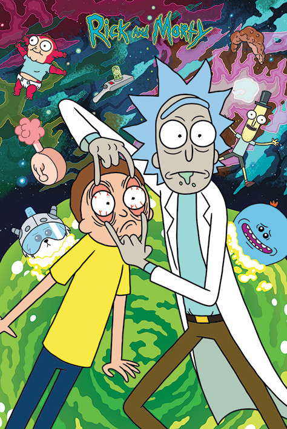

I am Anna who codes from Stamford,CT, and i am 15 years old. I was born in Stamford but raised in Georgia. I am high school student and i am going to 11th grade.
For now i live in Georgia with my family but when i finish 11th grade i am thinking of moving here in Stamford.
I love being here with new friends and coding.
I listen to kpop (korean pop). Favourite group BTS.
I love netflix & chilling. Favourite tv show: Rick and Morty,
